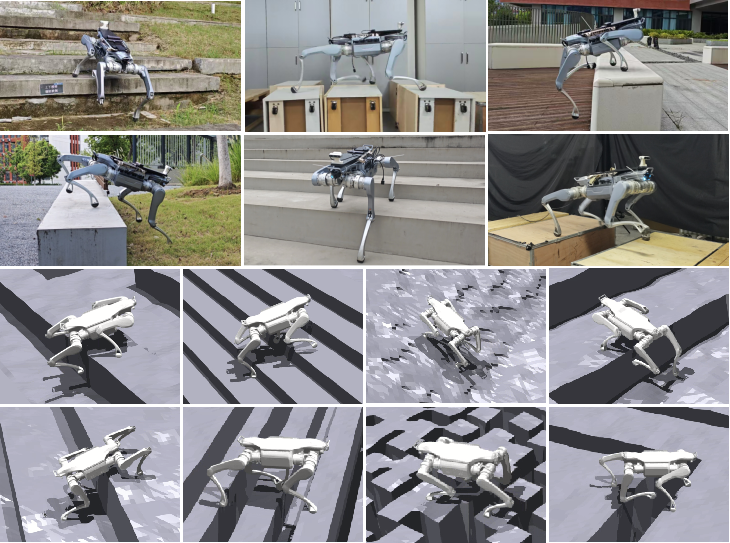
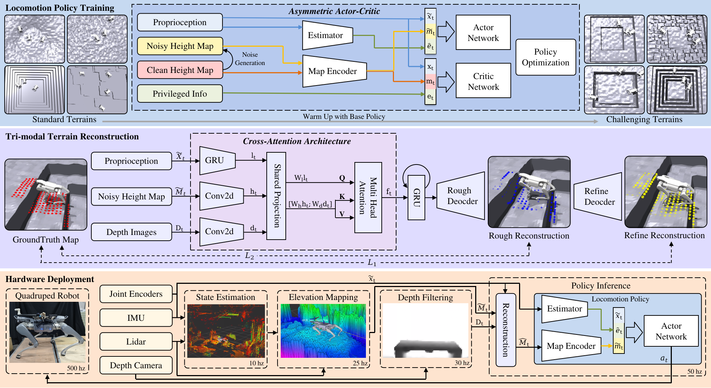

Reliable terrain perception is critical for legged locomotion, yet onboard exteroceptive observations are often corrupted by motion distortion, visual occlusion, and sensing noise during real-world deployment.
To address these challenges, we propose TriFusion, a tri-modal cross-attention framework for high-fidelity terrain height map reconstruction by jointly fusing noisy elevation maps, depth frames, and proprioceptive histories under gradient-consistent supervision.
The motion-conditioned attention adaptively aggregates complementary modality representations to compensate for perception distortions, while preserving critical terrain structures for foothold planning.
The refined terrain representation is further integrated with a progressively trained perceptive locomotion policy.
The policy is first trained on standard terrains to acquire stable locomotion primitives and then fine-tuned on challenging terrains with corrupted height maps for resilient obstacle traversal.
To bridge the sim-to-real gap, we build a closed-loop deployment pipeline that unifies state estimation, elevation mapping, depth filtering, and policy inference.
Simulation ablations and hardware experiments on the quadruped robot Unitree A2 demonstrate that TriFusion improves terrain reconstruction fidelity and yields more resilient locomotion over challenging terrains.